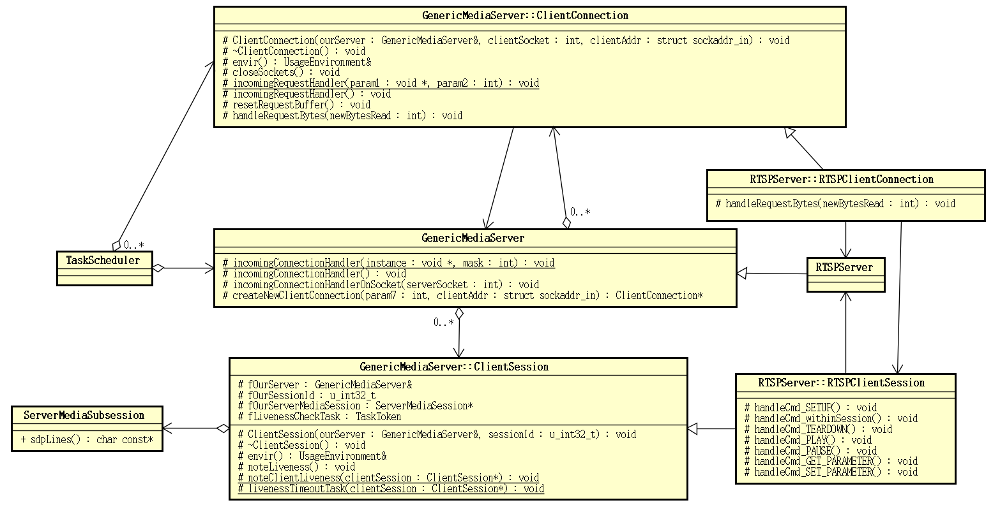

1. Live555 source code analysis: RTSPServer component structure
Posted on 2017-09-06 | In live555
The previous articles analyzed the processing logic of RTSP in live555. The
processing logic of RTSP processing related components is a bit complicated.
This article will review the relationship between them.
The relationship between RTSP processing related components in live555 is as
follows:

The source of the event and execution process is
at TaskScheduler. GenericMediaServer When an object is created, it will be
the TaskScheduler registered handler events on a server socket and the socket
processing
GenericMediaServer::incomingConnectionHandler(void* instance, int /*mask*/)。
The event handler execution on the server socket is triggered when a client
connects to the server. At this point the client socket is created based
on ClientConnection the object,
and RTSPClientConnection. RTSPClientConnection During the creation of the object,
the client socket and
ClientConnection the handler that handles the event on the socket are processed.
GenericMediaServer::ClientConnection::incomingRequestHandler(void* instance, int /*mask*/) Register to TaskScheduler.
After the RTSP request data sent by the client arrives,
the GenericMediaServer::ClientConnection data will be read and handed over to
RTSPServer::RTSPClientConnection::handleRequestBytes(int newBytesRead) deal
with.
RTSPServer::RTSPClientConnection Parse the RTSP request, and
processing OPTIONS, DESCRIBE and the like without SETUP streaming session
establishment request to process.
RTSPServer::RTSPClientConnection In the process SETUP a request, it will create a
streaming media session RTSPServer::RTSPClientSession, a specific session
establishment process will be delegated to the latter process.
After the session establishment request needs to be processed, it will be handed
over to RTSPServer::RTSPClientSession treatment.
Here we take a look at RTSPServer::RTSPClientConnection the full definition:
class RTSPServer: public GenericMediaServer {
. . . . . .
public: // should be protected, but some old compilers complain otherwise
// The state of a TCP connection used by a RTSP client:
class RTSPClientSession; // forward
class RTSPClientConnection: public GenericMediaServer::ClientConnection {
public:
// A data structure that's used to implement the "REGISTER" command:
class ParamsForREGISTER {
public:
ParamsForREGISTER(char const* cmd/*"REGISTER" or "DEREGISTER"*/,
RTSPClientConnection* ourConnection, char const* url, char const* urlSuffix,
Boolean reuseConnection, Boolean deliverViaTCP, char const* proxyURLSuffix);
virtual ~ParamsForREGISTER();
private:
friend class RTSPClientConnection;
char const* fCmd;
RTSPClientConnection* fOurConnection;
char* fURL;
char* fURLSuffix;
Boolean fReuseConnection, fDeliverViaTCP;
char* fProxyURLSuffix;
};
protected: // redefined virtual functions:
virtual void handleRequestBytes(int newBytesRead);
protected:
RTSPClientConnection(RTSPServer& ourServer, int clientSocket, struct sockaddr_in clientAddr);
virtual ~RTSPClientConnection();
friend class RTSPServer;
friend class RTSPClientSession;
// Make the handler functions for each command virtual, to allow subclasses to reimplement them, if necessary:
virtual void handleCmd_OPTIONS();
// You probably won't need to subclass/reimplement this function; reimplement "RTSPServer::allowedCommandNames()" instead.
virtual void handleCmd_GET_PARAMETER(char const* fullRequestStr); // when operating on the entire server
virtual void handleCmd_SET_PARAMETER(char const* fullRequestStr); // when operating on the entire server
virtual void handleCmd_DESCRIBE(char const* urlPreSuffix, char const* urlSuffix, char const* fullRequestStr);
virtual void handleCmd_REGISTER(char const* cmd/*"REGISTER" or "DEREGISTER"*/,
char const* url, char const* urlSuffix, char const* fullRequestStr,
Boolean reuseConnection, Boolean deliverViaTCP, char const* proxyURLSuffix);
// You probably won't need to subclass/reimplement this function;
// reimplement "RTSPServer::weImplementREGISTER()" and "RTSPServer::implementCmd_REGISTER()" instead.
virtual void handleCmd_bad();
virtual void handleCmd_notSupported();
virtual void handleCmd_notFound();
virtual void handleCmd_sessionNotFound();
virtual void handleCmd_unsupportedTransport();
// Support for optional RTSP-over-HTTP tunneling:
virtual Boolean parseHTTPRequestString(char* resultCmdName, unsigned resultCmdNameMaxSize,
char* urlSuffix, unsigned urlSuffixMaxSize,
char* sessionCookie, unsigned sessionCookieMaxSize,
char* acceptStr, unsigned acceptStrMaxSize);
virtual void handleHTTPCmd_notSupported();
virtual void handleHTTPCmd_notFound();
virtual void handleHTTPCmd_OPTIONS();
virtual void handleHTTPCmd_TunnelingGET(char const* sessionCookie);
virtual Boolean handleHTTPCmd_TunnelingPOST(char const* sessionCookie, unsigned char const* extraData, unsigned extraDataSize);
virtual void handleHTTPCmd_StreamingGET(char const* urlSuffix, char const* fullRequestStr);
protected:
void resetRequestBuffer();
void closeSocketsRTSP();
static void handleAlternativeRequestByte(void*, u_int8_t requestByte);
void handleAlternativeRequestByte1(u_int8_t requestByte);
Boolean authenticationOK(char const* cmdName, char const* urlSuffix, char const* fullRequestStr);
void changeClientInputSocket(int newSocketNum, unsigned char const* extraData, unsigned extraDataSize);
// used to implement RTSP-over-HTTP tunneling
static void continueHandlingREGISTER(ParamsForREGISTER* params);
virtual void continueHandlingREGISTER1(ParamsForREGISTER* params);
// Shortcuts for setting up a RTSP response (prior to sending it):
void setRTSPResponse(char const* responseStr);
void setRTSPResponse(char const* responseStr, u_int32_t sessionId);
void setRTSPResponse(char const* responseStr, char const* contentStr);
void setRTSPResponse(char const* responseStr, u_int32_t sessionId, char const* contentStr);
RTSPServer& fOurRTSPServer; // same as ::fOurServer
int& fClientInputSocket; // aliased to ::fOurSocket
int fClientOutputSocket;
Boolean fIsActive;
unsigned char* fLastCRLF;
unsigned fRecursionCount;
char const* fCurrentCSeq;
Authenticator fCurrentAuthenticator; // used if access control is needed
char* fOurSessionCookie; // used for optional RTSP-over-HTTP tunneling
unsigned fBase64RemainderCount; // used for optional RTSP-over-HTTP tunneling (possible values: 0,1,2,3)
};
RTSPServer::RTSPClientConnection inherited from GenericMediaServer::ClientConnection:
class GenericMediaServer: public Medium {
. . . . . .
public: // should be protected, but some old compilers complain otherwise
// The state of a TCP connection used by a client:
class ClientConnection {
protected:
ClientConnection(GenericMediaServer& ourServer, int clientSocket, struct sockaddr_in clientAddr);
virtual ~ ClientConnection ();
UsageEnvironment& envir() { return fOurServer.envir(); }
void closeSockets();
static void incomingRequestHandler(void*, int /*mask*/);
void incomingRequestHandler();
virtual void handleRequestBytes(int newBytesRead) = 0;
void resetRequestBuffer();
protected:
friend class GenericMediaServer;
friend class ClientSession;
friend class RTSPServer; // needed to make some broken Windows compilers work; remove this in the future when we end support for Windows
GenericMediaServer& fOurServer;
int fOurSocket;
struct sockaddr_in fClientAddr;
unsigned char fRequestBuffer[REQUEST_BUFFER_SIZE];
unsigned char fResponseBuffer[RESPONSE_BUFFER_SIZE];
unsigned fRequestBytesAlreadySeen, fRequestBufferBytesLeft;
};
From their definitions, it's not hard to understand that their responsibilities
are primarily to handle network I/O, handle RTSP requests, and establish
sessions.
Let's look at RTSPServer::RTSPClientSession the definition:
class RTSPServer: public GenericMediaServer {
. . . . . .
// The state of an individual client session (using one or more sequential TCP connections) handled by a RTSP server:
class RTSPClientSession: public GenericMediaServer::ClientSession {
protected:
RTSPClientSession(RTSPServer& ourServer, u_int32_t sessionId);
virtual ~RTSPClientSession();
friend class RTSPServer;
friend class RTSPClientConnection;
// Make the handler functions for each command virtual, to allow subclasses to redefine them:
virtual void handleCmd_SETUP(RTSPClientConnection* ourClientConnection,
char const* urlPreSuffix, char const* urlSuffix, char const* fullRequestStr);
virtual void handleCmd_withinSession(RTSPClientConnection* ourClientConnection,
char const* cmdName,
char const* urlPreSuffix, char const* urlSuffix,
char const* fullRequestStr);
virtual void handleCmd_TEARDOWN(RTSPClientConnection* ourClientConnection,
ServerMediaSubsession* subsession);
virtual void handleCmd_PLAY(RTSPClientConnection* ourClientConnection,
ServerMediaSubsession* subsession, char const* fullRequestStr);
virtual void handleCmd_PAUSE(RTSPClientConnection* ourClientConnection,
ServerMediaSubsession* subsession);
virtual void handleCmd_GET_PARAMETER(RTSPClientConnection* ourClientConnection,
ServerMediaSubsession* subsession, char const* fullRequestStr);
virtual void handleCmd_SET_PARAMETER(RTSPClientConnection* ourClientConnection,
ServerMediaSubsession* subsession, char const* fullRequestStr);
protected:
void deleteStreamByTrack(unsigned trackNum);
void reclaimStreamStates();
Boolean isMulticast() const { return fIsMulticast; }
// Shortcuts for setting up a RTSP response (prior to sending it):
void setRTSPResponse(RTSPClientConnection* ourClientConnection, char const* responseStr) { ourClientConnection->setRTSPResponse(responseStr); }
void setRTSPResponse(RTSPClientConnection* ourClientConnection, char const* responseStr, u_int32_t sessionId) { ourClientConnection->setRTSPResponse(responseStr, sessionId); }
void setRTSPResponse(RTSPClientConnection* ourClientConnection, char const* responseStr, char const* contentStr) { ourClientConnection->setRTSPResponse(responseStr, contentStr); }
void setRTSPResponse(RTSPClientConnection* ourClientConnection, char const* responseStr, u_int32_t sessionId, char const* contentStr) { ourClientConnection->setRTSPResponse(responseStr, sessionId, contentStr); }
protected:
RTSPServer& fOurRTSPServer; // same as ::fOurServer
Boolean fIsMulticast, fStreamAfterSETUP;
unsigned char fTCPStreamIdCount; // used for (optional) RTP/TCP
Boolean usesTCPTransport() const { return fTCPStreamIdCount > 0; }
unsigned fNumStreamStates;
struct streamState {
ServerMediaSubsession* subsession;
int tcpSocketNum;
void* streamToken;
} * fStreamStates;
};
RTSPServer::RTSPClientSession inherited from GenericMediaServer::ClientSession:
// The state of an individual client session (using one or more sequential TCP connections) handled by a server:
class ClientSession {
protected:
ClientSession(GenericMediaServer& ourServer, u_int32_t sessionId);
virtual ~ ClientSession ();
UsageEnvironment& envir() { return fOurServer.envir(); }
void noteLiveness();
static void noteClientLiveness(ClientSession* clientSession);
static void livenessTimeoutTask(ClientSession* clientSession);
protected:
friend class GenericMediaServer;
friend class ClientConnection;
GenericMediaServer& fOurServer;
u_int32_t fOurSessionId;
ServerMediaSession* fOurServerMediaSession;
TaskToken fLivenessCheckTask;
};
It will be appreciated RTSPServer::RTSPClientSession for enclosing the entire
streaming session, an RTSP request that requires processing streaming media
session has been established, such as PLAY the like.
Specific interactive streaming media data, such as audio and video files /
parsed data, RTP/RTCP data package and a transceiver or the like, dependent
on ServerMediaSession and ServerMediaSubsession.
Reward
Done.
1.1. Live555 source code analysis series
- Live555 Source code analysis: Introduction
- live555 Source code analysis: Infrastructure
- live555 Source code analysis: MediaSever
- Wireshark capture packet analysis RTSP/RTP/RTCP Basic working process
- live555 Source code analysis: RTSPServer
- live555 Source code analysis: DESCRIBE processing
- live555 Source code analysis: SETUP processing
- live555 Source code analysis :PLAY processing
- live555 Source code analysis: RTSPServer component structure
- live555 Source code analysis:
- ServerMediaSession live555 Source code analysis: sub-session SDP line generation
- live555 Source code analysis: sub-session SETUP
- live555 Source code analysis: play start